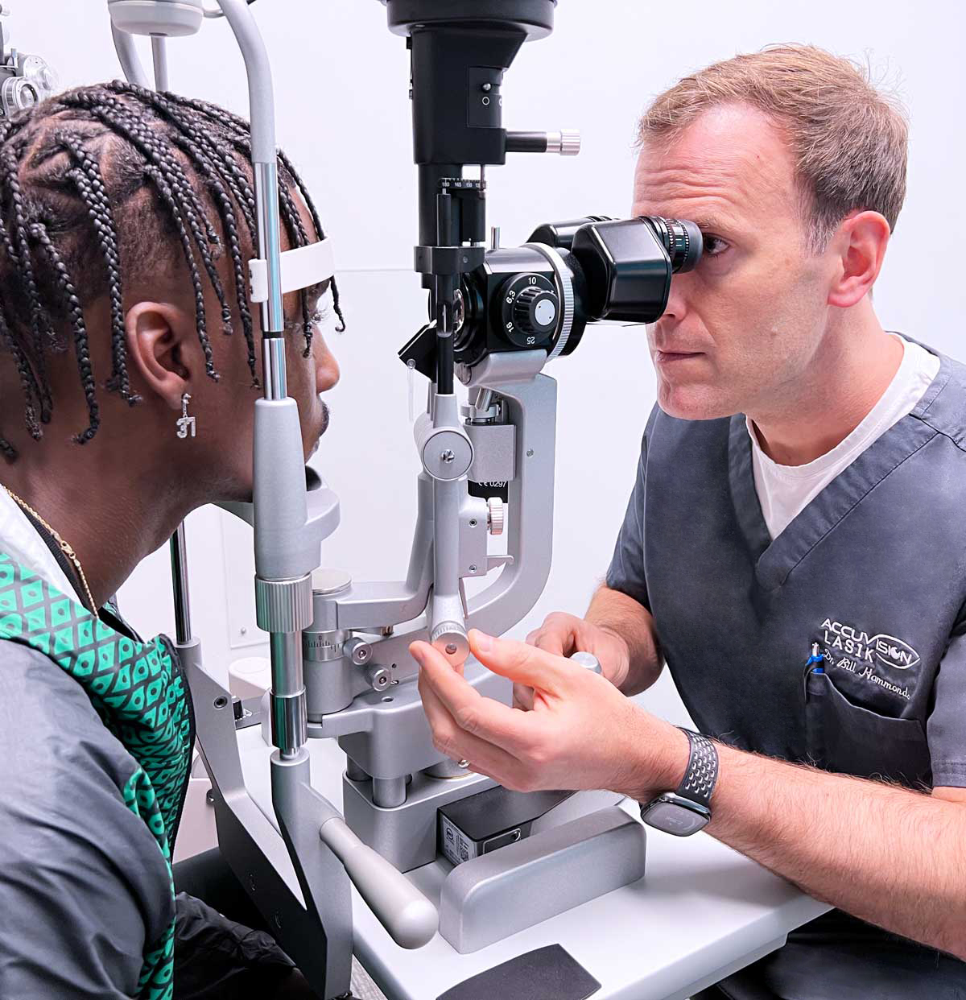

Call Us: (704) 765-2745
10616 Metromont Pkwy, Ste 102
Charlotte, NC 28269
LASIK offers life-changing benefits for those tired of glasses or contact lenses. With a quick, painless procedure, LASIK can correct common vision issues like nearsightedness, farsightedness, and astigmatism.
Imagine the freedom of waking up with clear vision every day, enjoying sports, traveling, and daily activities without the hassle of corrective eyewear. LASIK is not only a safe, proven solution but also a long-term investment in your quality of life.
Discover the convenience and clarity that LASIK can bring to your world.

Key facts about why laser vision correction remains the world's most popular elective medical procedure.
LASIK surgery typically takes less than 30 minutes to complete, with most of the time spent on preparation.
Many patients experience improved vision within 24-48 hours and can resume normal activities in just a few days.
LASIK offers long-lasting results by permanently reshaping the cornea to correct vision problems like nearsightedness, farsightedness, and astigmatism.
Anesthetic eye drops are used to ensure the procedure is painless. There are no needles or injections.
LASIK surgery has an over 99% success rate, delivering 20/20 or better uncorrected visual acuity for qualified patients.
Modern LASIK procedures use advanced all-laser techniques, eliminating the need for blades, which enhances precision and safety for patients.
Both LASIK and PRK are excellent options for correcting vision issues, but they differ in how the cornea is treated. Both procedures offer similar long-term vision correction results, and our doctors can help determine which is best for you.
LASIK creates a small flap in the cornea to reshape it, leading to faster recovery with minimal discomfort.
PRK removes the outer layer of the cornea instead of creating a flap, which takes longer to heal but is ideal for certain corneas.